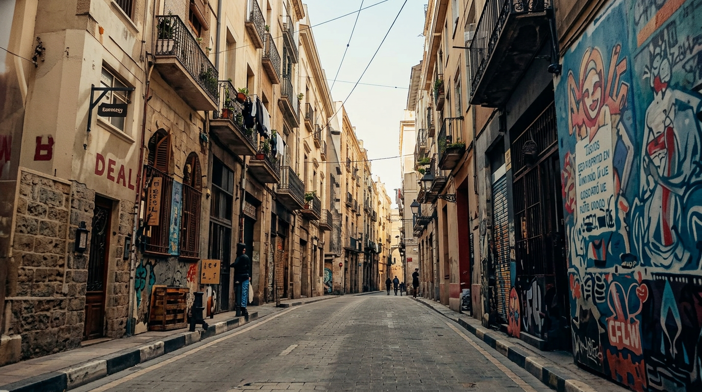
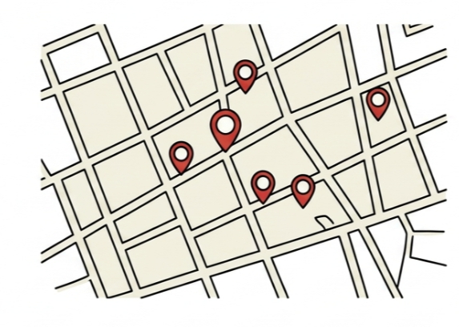
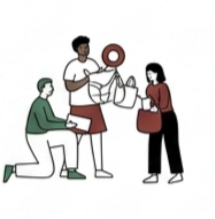
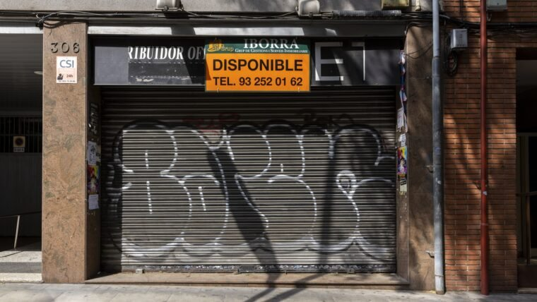

Anàlisi
Abril 2026
El lloguer comercial no té límits. I és legal.
L'habitatge té contenció de rendes. El comerç local no té res. La llei tracta la ferreteria igual que un local corporatiu.
Llegir l'article →

El barri no està en venda.
Els comerços de barri no tanquen perquè ningú hi va. Tanquen perquè els locals estan en mans del mercat especulatiu. AQT vol canviar qui és el propietari, no qui és el client.
Llegir més sobre el projecte →

Cada punt representa un comerç documentat a Gràcia. El mapa s'actualitza a mesura que treballem sobre el terreny.
